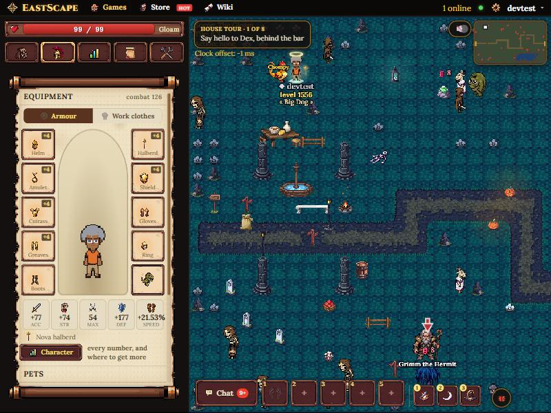
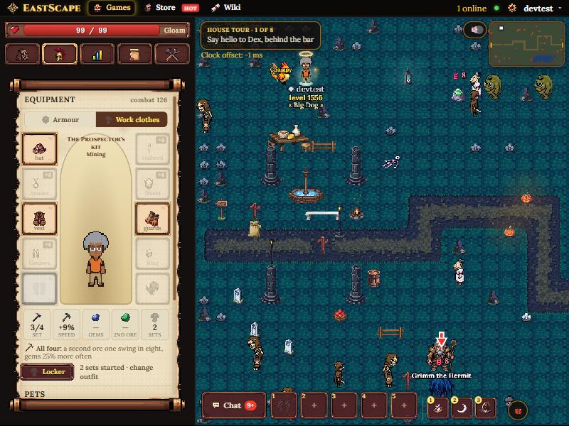
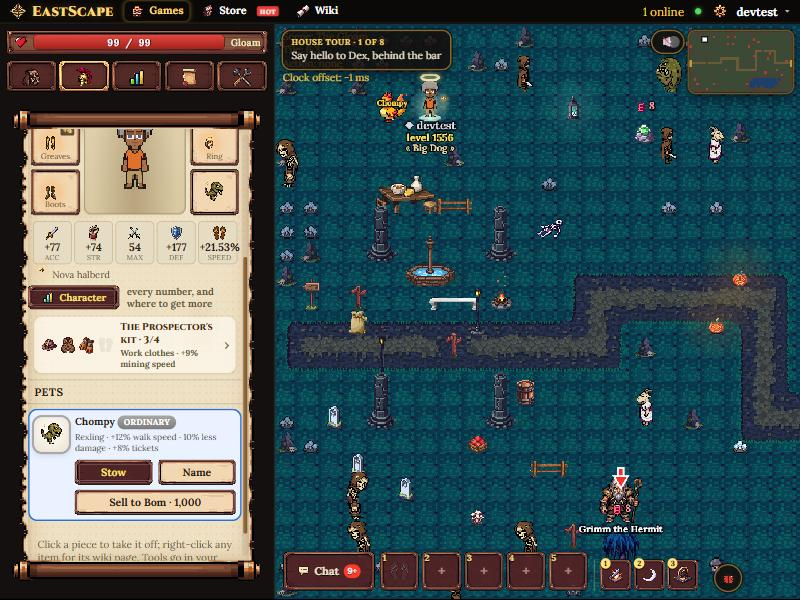
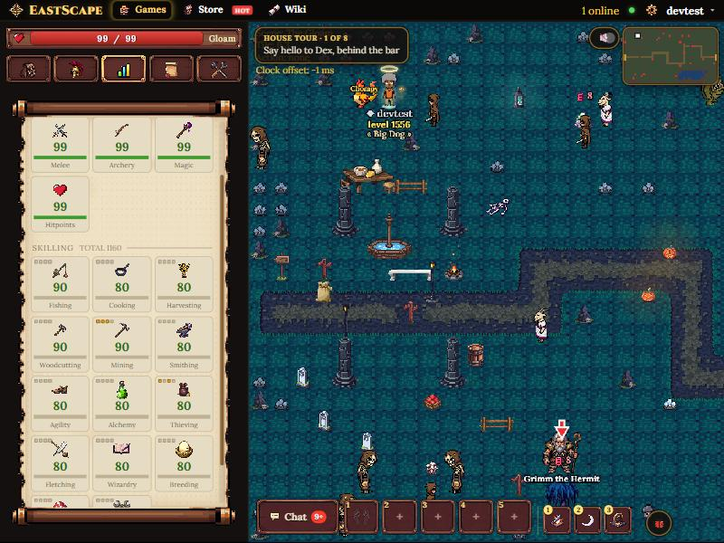
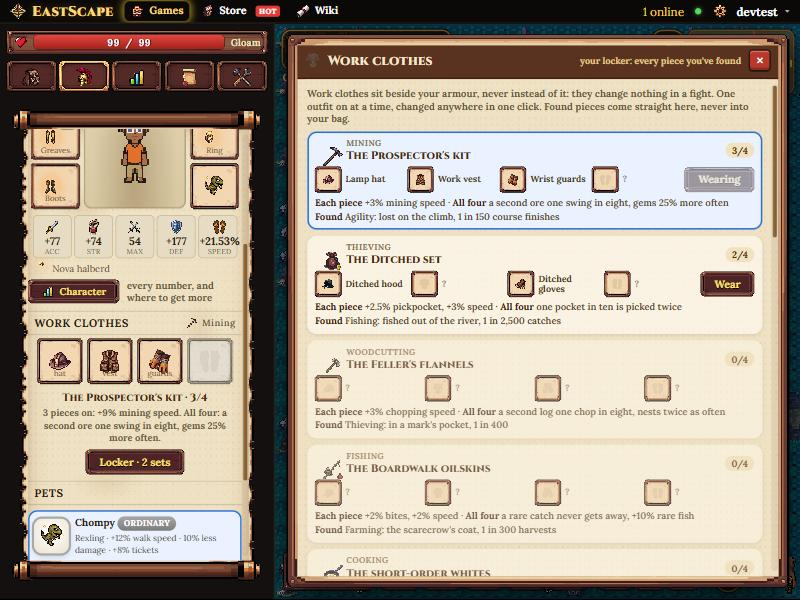
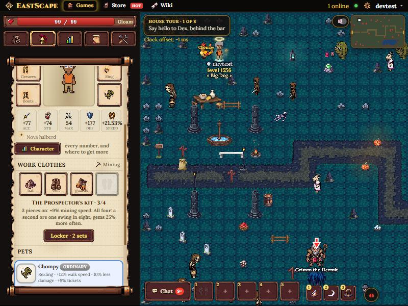
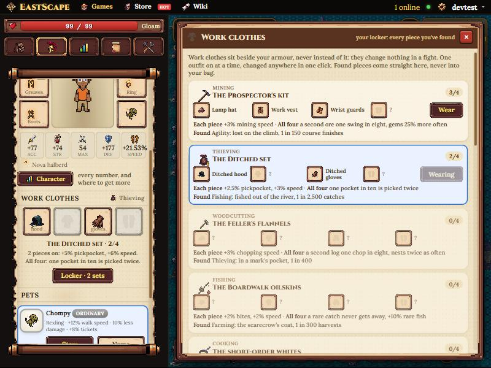

Work clothes
Where the slot goes, and how it looks. All of these are the real game on the dev server with the mockup laid over it, built only from the game's own styles; the pieces are pretend (the Prospector's kit 3 of 4, the Ditched set 2 of 4). The owner's note on the first try: the Equipment tab already carries a lot, and a whole Work clothes section added about 230px to it, pushing Pets below the fold. Chosen 1 October: A, the doll switch (one row), with the skill pips from B. B and the first try are kept below for comparison.
A · Flip the paper doll chosen
An Armour | Work clothes switch under the Equipment heading. Work turns the doll's own hat, coat, gloves and boots squares into the outfit and dims the other six, and the five-number combat strip becomes the outfit's numbers: pieces, speed, and the all-four bonuses (greyed until you have all four). The Character button becomes Locker. Nothing new to learn: the squares are where players already look for clothes. Hovering an empty square says where the piece comes from.

A1. Armour (as now). The only change is the switch: one row, about 30px. Everything else is today's tab.

A2. Work clothes. The Prospector's kit in the doll's own squares, the boots square empty, the strip reading 3/4 · +9% speed · gems and 2nd ore greyed until all four · 2 sets started. The set's name sits over the figure.
B · One line, and pips on the skills the pips: chosen
The Equipment tab gets a single line (the four pieces small, the set and its count) that opens the Locker. And because a set belongs to a skill, each skill's tile in the Skills tab gets four small pips, gold for each piece found, so "how far along is my mining set" is answered where you look at mining. The pips work with A as well; I'd add them either way.

B1. One line, about 50px, between the Character button and Pets.

B2. The pips. Mining shows three gold, Thieving two; the rest empty. Hover says which set and how many.
The Locker (both options)

Every set in the game, the ones you've started first: the pieces found, a ? for each you haven't, what each piece and all four do, and where the set is found, so the locker doubles as the "go and get it" list. The outfit on is outlined in blue, like a worn pet. Wear swaps all four at once.
The first try: a section of its own
Kept for comparison. Clear, but it is the tallest thing in the tab after the doll.

A heading, four squares, the set's name, a bonus line and a Locker button: about 230px.

Changing jobs: Wear on the Ditched set and the row reads Thieving. Same in A and B.
Other places, considered
- A tab of its own (a coat hanger beside Equipment): the most room, but a sixth tab for something you change a few times a session.
- A Sets tab in the Character window: a good second place for the full list, too far from where you change outfits to be the only one.
- Dressing automatically for whatever skill you start: no slot at all, but then owning a piece is the whole thing and there's no choice left to show anywhere.
How it works
What changes for the Ditched set
- Today its pieces go in the armour slots. On the update, every Ditched piece anyone owns (worn, bag or bank) moves to their locker, and the armour slot it was in is left empty.
- It gains its all-four bonus (one pocket in ten picked twice), and its drop stops giving a piece you already have.
- Anyone holding a spare Ditched piece gets its value in tickets, since the locker holds one of each.
Building it
- Data:
C.work(which set is on) andC.locker(the pieces found) on the character, cleaned innormChar. No new squares inSLOTS, so nothing that walks the armour can pick them up by accident. - Effects: a
setFx(C, skill)read only where that skill already reads a bonus. It's a lookup, not a timer. - Messages: one,
{t:"work", set}. The locker is inmeOf, so the page needs nothing else. - On screen: the switch (A) or the line (B), the Locker, the skill pips, the Character window's Sets line, and a Skilling sets page in the collection log.